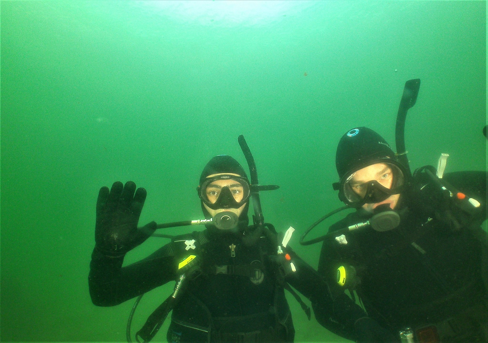

Jacob R. Davis
Home
About
Projects
Music
Artwork

About Me
Graduate student at the University of Massachusetts Amherst (M.S. Mechanical Engineering)
CV
Ocean Resources and Renewable Energy Laboratory
Other Links:
High Energy: UMass Innovations Power the World Through Wind, Water, and Air (Heather Kamins, UMass Magazine)
UMass Amherst Wind Energy Fellows: Jacob Davis
Ten UMass Students Receive NSF Graduate Research Fellowships
Jake's bookshelf: currently-reading
Computer Organization & Design: The Hardware/Software Interface
by
David A. Patterson
tagged: currently-reading
Eat Like a Fish: My Adventures as a Fisherman Turned Restorative Ocean Farmer
by
Bren Smith
tagged: currently-reading
A Feast for Crows
by
George R.R. Martin
tagged: currently-reading
Energy at the Crossroads: Global Perspectives and Uncertainties
by
Vaclav Smil
tagged: currently-reading
The Sense of Style: The Thinking Person's Guide to Writing in the 21st Century
by
Steven Pinker
tagged: currently-reading
Share
book reviews
and ratings with Jake, and even join a
book club
on Goodreads.
Jake's bookshelf: read
Swell: Sailing the Pacific in Search of Surf and Self
by
Liz Clark
A Storm of Swords
by
George R.R. Martin
Statistical Theory and Modeling for Turbulent Flows
by
Paul A. Durbin
Cravings: Recipes for All the Food You Want to Eat
by
Chrissy Teigen
The Two Towers
by
J.R.R. Tolkien
Share
book reviews
and ratings with Jake, and even join a
book club
on Goodreads.
My currently-reading shelf:
my read shelf: